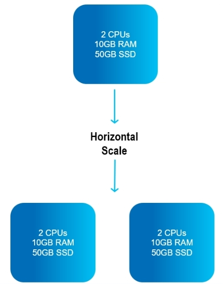
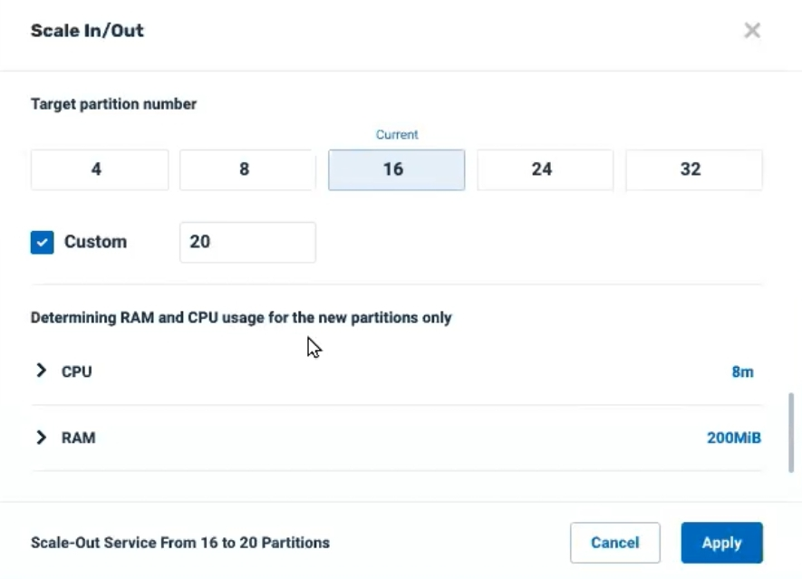

Scale Out/In
Horizontal Scaling
Horizontal scaling, referred to as Scale Out/Scale In, means to add or reduce the number of partitions used for an application.
For example, additional partitions may be created in the same server, or alternatively, servers may be added or removed.

Big data is often stored in geographically dispersed nodes, which includes partitioning of databases.
If the application involves few cross-partition joins, it may be appropriate for Scale Out/Scale In.
NoSQL databases often use Scale Out/Scale In.
Advantages
- Horizontal scaling can be less expensive than vertical scaling - it is generally less expensive to add cloud storage, than to purchase new physical machines.
- This method of rescaling provides resilience and fault tolerance - with more partitions, the impact of a partition failure is lessened.
- Horizontal scaling supports linear increases in capacity on the fly - RAM or CPU capacity can be increased or decreased while maintaining a constant RAM:CPU ratio .
Scale Out/In may cause a temporary quiesce of the affected partitions. It is recommended to perform the scaling operation during an off-peak period.
Pre-requisites
Scale Out/In is available for a partitioned cluster schema with a high availability cluster.
Kubernetes, ElasticGrid and ServiceGrid orchestration methods are supported.
in ServiceGrid, the GSC's must be initially spawned by the user before performing a Scale Out operation.
The following features are not currently supported for Scale Out/In:
- AutoGeneratedId
- Fifo
- memoryXtend
- SpaceIterator
During a Scale Out operation, the first read/write operation will trigger a Java exception, which can be handled as follows. The example is for a writeMultiple operation.
try {
gigaSpace.writeMultiple(entries);
}
catch (WriteMultipleException e) {
gigaSpace.writeMultiple(entries);
}
Subsequent read/write operations will not raise this exception.
Scale Out/In APIs
Scale Out/In can be performed using the Ops Manager user interface, the Command Line Interface (CLI), and programmatically using REST-API.
Types of Scale Out/In
Scale Out/In can be performed in two ways:
- To change the number of partitions used by a Space,
- To change the number of partitions allocated to a particular service.
Both types of Scale Out/In are shown below.
The terminology for scaling is relative: If there are three partitions of size 60Mb, 80Mb and 100Mb, scaling to five partitions of 85Mb will scale all five partitions to 85Mb. This is a Scale Out because more partitions are deployed.
Note that RAM is increased for two partitions (60Mb to 85Mb; 80Mb to 85Mb) and decreased for one partition (100Mb to 85Mb).
The terminology for scaling is relative: If there are three partitions using a service, scaling to to five partitions is a Scale Out , while scaling to two partitions is a Scale In.
Scale Out/In for a Space
In this method of horizontal scaling, you specify the number of partitions for a Space.
Ops Manager -- need GUI here
Scale Out (Add) or Scale-In (Remove) Partitions
Command:
pu scale-horizontal <space-name> <num-partitions> or pu scale-h <space-name> <partitions>
Description:
The Space is rescaled to the desired number of partitions.
Input Example:
pu scale-horizontal mySpace 4
Output Example:
REQUEST DETAILS
ID 6
Description Scale out pu (mySpace) partitions by 2
Status running
Status Url http://127.0.1.1:8090/v2/pus/mySpace/instances
Submitted By anonymous
Submitted From 127.0.0.1
Submitted At 2020-05-20 16:32:01
Parameters and Options:
| Parameter |
Description |
| space-name |
Name of the Space to rescale |
| partitions |
Number of partitions for the Space |
Request Status of a Scale Out/In Request
Command:
pu request status <request-id>
Description:
The status of the scaling request is displayed.
Input Example:
pu request-status 6
Output Example:
REQUEST DETAILS
ID 6
Description Scale out pu (mySpace) partitions by 2
Status successful
Status Url http://127.0.1.1:8090/v2/pus/mySpace/instances
Submitted By anonymous
Submitted From 127.0.0.1
Submitted At 2020-05-20 16:32:01
Completed at 2020-05-20 16:32:31
Parameters and Options:
| Parameter |
Description |
| request-id |
ID of the scaling request |
Scale Out/In for a Service
In this method of horizontal scaling ,the number of partitions allocated to a particular service is increased or decreased.
Click on the service card of the desired service in Ops Manager. The Service Details screen will display:
Note the ellipsis menu (three vertical dots). Click on the option Scale Out/In. Depending on the method of orchestration you are using, the next screen will appear as follows:
ServiceGrid:

In the example above, there are currently 16 partitions alocated for the service. You can choose one of the suggested numbers of partitions, or press Custom to choose any number of partitions. Note that the new partitions will all have the same allocation of RAM and CPU as the existing partitions.
Kubernetes and ElasticGrid:

In the example above, there are currently 16 partitions using the service. You can choose one of the suggested numbers of partitions, or press Custom to choose any number of partitions.
Note that by default the suggested RAM (8M) and CPU (200Mib) for the new partitions is based on the most frequent allocation for the existing partitions. Click on > CPU or > RAM to override these suggested values for the new partitions.
After entering the desired values and pressing Apply, the system will display a confirmation screen:
Press Scale Now to begin the scaling process.
As the scaling is underway, a progress message will display in the screen banner:
Note that while the scaling is in progress, the status of the individual affected services will display in the Service Details screen:

CLI for SOSI a service here